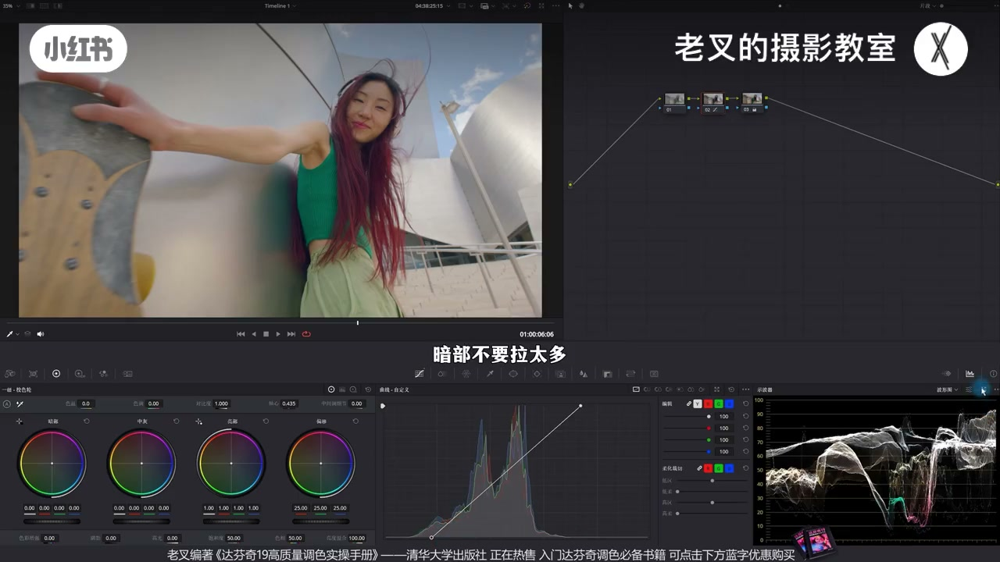
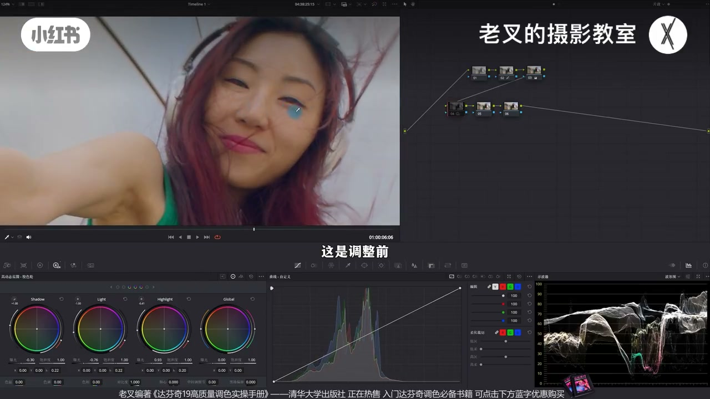
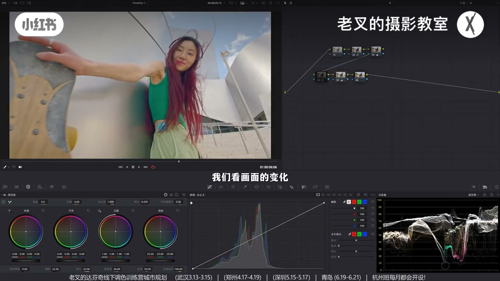
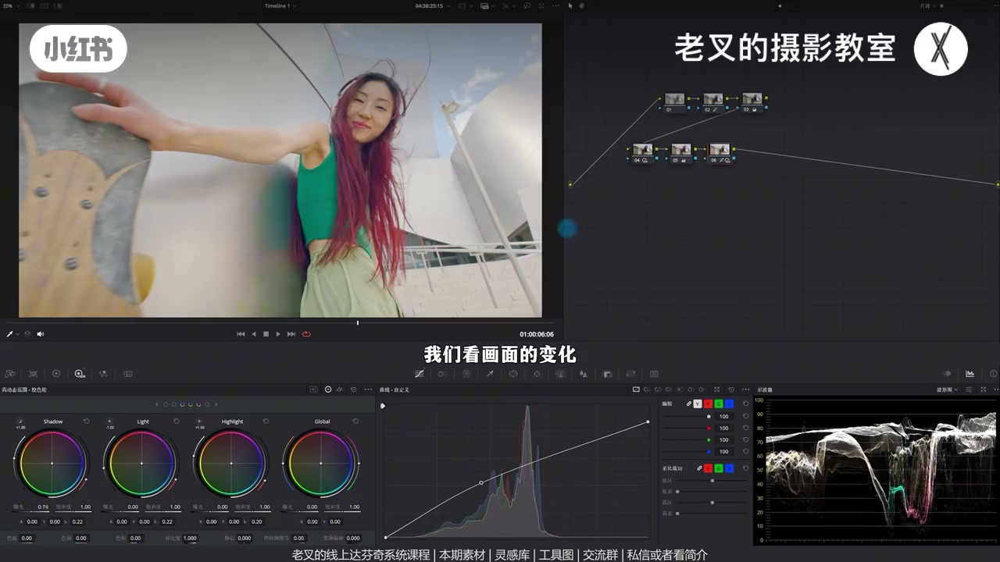
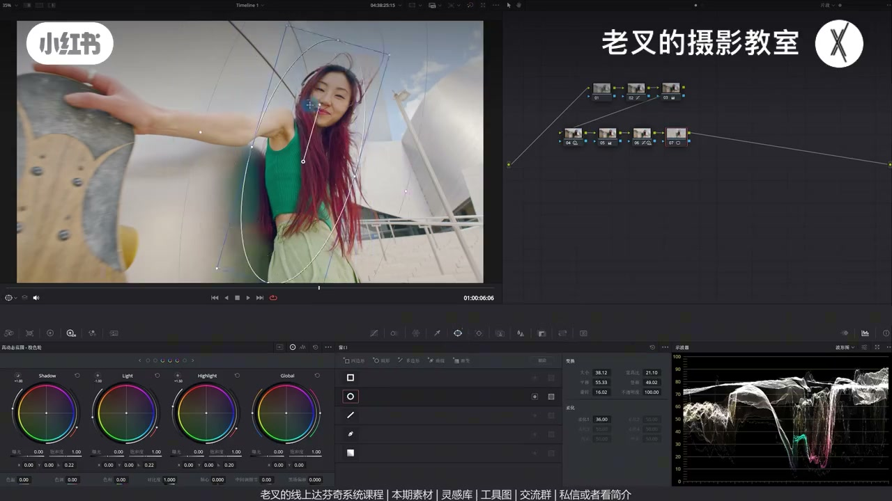
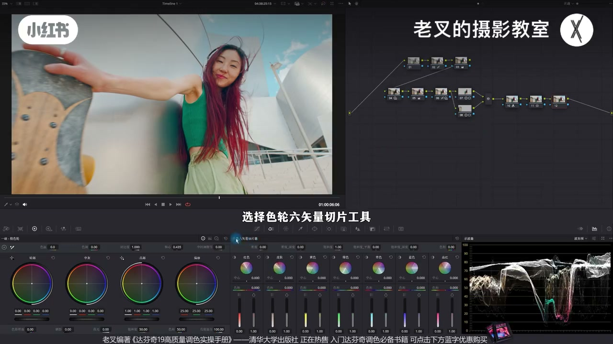

内容要点
暗面人物一提就发灰：提亮本质在降反差，最暗也被抬走丢失黑位。四技巧：①先 HDR 压中灰增反差，再阴影滑块提、高光滑块护天空；②曲线中提+高压，同节点降 Shadow（或暗端右移）保黑位；③亮画面要找暗——人物与滑板局部加对比；④高亮场景颜色可更鲜艳（RGB 青橙等），并用六相降皮肤密度小幅提亮肤色。组合保证中灰提亮而高低两端少动。
知识结构
暗面提亮发灰；还原暗部留空间，主内容约 10% 附近。
先降 Shadow/Light 增中灰反差并抬 Highlight；再阴影提+高光压，护天空。
曲线中提高压会发灰→同节点降 Shadow 去灰；波形同样是中灰上移。
亮掉画面要找暗：人物/滑板遮罩加对比，层次回来。
RGB 青橙增色；六相降皮肤密度提亮肤色，再略降饱和。
增反差再降反差提中灰→曲线中提→局部找暗→颜色助层次；可按需选用。
提亮不发灰＝别把最暗一起抬走，也别把天空一起过曝。先给中灰制造反差再提，或曲线提中压高并锁 Shadow；亮了还要局部找暗；颜色鲜艳能丰富层次、减轻发灰感。四技巧可单用可全上。
00:00-00:37暗面一提就发灰：先还原留操作空间
常有朋友：人物在暗面，每次提亮都发灰。先简单还原：曲线拉高光与暗部，暗部别拉太狠——波形暗部留空间，主内容大约在 10% 附近即可。结果可能略灰，但给后面留空间。三号饱和可多加一点。
明确要提暗部：提亮本质是降反差（暗变亮、亮变暗），所以容易发灰——要先为操作做准备。

00:37-02:41技巧1：先增中灰反差，再阴影提、高光护天
先增中间调反差：降 Shadow 与 Light 压中灰，再抬 Highlight 并收窄范围贴近要提亮的区域——人脸与背景建筑更立体。下一节点提高阴影滑块提暗部；阴影也会影响高光，故再降高光滑块防天空过曝。
两节点一起开关：暗部亮了、天空变化不大。关掉前一节点只开提亮，发灰明显；打开前一节点后曝光变化不大但人物更立体。波形上高低两端少动、中灰明显上提——发灰是因为最暗也被抬、丢失合适黑位，这组组合就是解法。

02:41-03:45技巧2：曲线中提高压 + Shadow 锁黑位
力度不够可用第二思路：同节点曲线中间上提（画面亮但天空也亮），高光端下降护天；仍会暗部发灰——再略降 Shadow（或把曲线暗端右移，看习惯），发灰去掉且明显提亮。
波形变化与技巧1同类：高光暗部少动、中灰上提。提中灰不发灰，就是保证暗部不受影响，同时高光别带飞，否则远亮于人物的天空易过曝。

03:45-04:35亮掉的画面要找暗：局部加对比
提亮时不能让画面只剩亮。人物与滑板应保持相对高反差，否则层次太弱。给人物画罩小幅加对比调轴；并行给滑板同样加对比——亮画面要去找暗，层次才回来。素材可自取。

04:35-05:44技巧3–4：颜色助层次，六相提肤
高亮画面颜色通常可更鲜艳：RGB 混合器抬红降蓝做青橙；可用蜘蛛网再偏青。小幅提肤：六相切片在皮肤区降低密度（明度升、饱和略增），再略降饱和——皮肤被「提亮」且不脏。颜色越鲜艳层次越丰富，提亮也不那么容易显灰。

05:44-07:04总结四阶段：可按需选用或全上
四阶段：①先增反差再阴影/高光组合提中灰护两端；②曲线中提高压并锁 Shadow；③局部给值得压暗/加反差的主体找暗；④颜色增艳 + 六相提肤。四种技巧按需选，全选也可以。操作简单，效果从发灰提亮变成有层次的亮。

完整转录（279段）
以下文本由 Whisper medium 模型自动转录，可能存在少量识别误差，已尽可能修正。
经常会有朋友问我
人物如果处在暗面
每次提亮的时候都会发挥
就像这样
这种情况下我们要怎么办呢
比如说我们这个素材
我们给它简单做一下还原
还原其实很容易
我是利用曲线
把它的高光和暗部拉到位
暗部不要拉太多
我们看波星图
其实我在暗部留的还是蛮多空间的
主要的内容都在差不多10%左右
就可以了
不要太暗
你可能从结果上看
会有一点发挥
但是可以给我们留更多的空间去操作
然后3号节点加一点点饱和度
饱和度要多加一点
然后我们建立几个节点拉到第二排
我们是明确要让暗部提亮的
既然知道目的
我们就要为这个操作去做准备
要提亮
但是不能让天空过曝
对吧
这个行为本质上
就是在降低我们画面的反差
就是让暗的变亮
亮的变暗
所以才会让画面发挥
那么我们就要先增加中间调部分的反差
我们可以通过降低
Shadow色轮的曝光
以及Light色轮的曝光
来把中晖部分给它稍微往下压一点
但压完了暗之后
我们高光也会受到影响
对不对
我们再把Highlight色轮也给它提高
稍微改一下Highlight色轮的范围
让它内容更加的贴近
我们想要提亮的这个区域
好
大概是这个情况
我们看到整体的画面反差是不是增加了
特别是人脸的变化
这是调整前
这调整后更加立体了
包括背景中的这个建筑也变得更加立体了
这时候我们就可以在后面这个节点
来减少反差了
我这里选择的是提高
一级教室轮中阴影滑块的曝光
这样的操作
确实可以让暗部提亮
但是阴影滑块也会影响到高光
可能会让你的高光过曝
天空过曝
所以我们要再降低一点
高光滑块
大概是这个效果
此时我们可以把这两个节点开关
一起来看一下画面变化
是不是能够看到暗部被提亮了
而天空则没有特别明显的变化
有些朋友可能会有疑惑
这样做你前面四号节点的行为
感觉不是很有必要
我们可以先把四号节点给它关闭了
单独开关五号节点
我们看画面的变化
五号节点的提亮
对画面的影响还是比较明显的
对吧
但是这样的提亮会让暗部明显发挥
此时我们再打开四号节点
你会发现
整体的曝光没有明显变化
但是人物能够更加立体
其实我们这个点
在拨信图上也看得到
我把这两个节点一起开关
我们看一下
在这两个操作下
你会发现暗部和高光部分
几乎没有受到太多的影响
但是中间调部分
它有明显的往上提的一个行为
那也就是说
我们让中晖部分提亮
并且没有让高光变得特别亮
也没让暗部压得特别灰
就像我们一开始说过的
提亮暗部发挥
是因为最暗的区域也一起被提亮了
从而失去了它合适的黑位
而我们这两个节点的组合
就能够解决这个问题
那如果说你觉得
这样提亮的力度还不够
我们可以利用第二种思路来
在新的这个节点上
我们先把曲线中间这一端
稍微往上一提
这样的操作
确实能让画面变亮
对吧
但是也会让天空变亮
所以我们在这个地方
把高光这一端给它往下一降
让天空不要受太多的影响
中间我们可以回来一点
大概是这样的一个结果
但这样同样也会让暗部发挥
对不对
所以此时我们在同一个节点中
稍微降低一点
Shadow色轮的曝光
我们看画面的变化
是不是降低Shadow色轮之后
我们就能够去掉画面发挥的这个情况
并且这样的一个组合
也能够让画面明显的提亮
那你说我不用Shadow色轮
我在曲线这一端
往右边移动行不行
当然是可以的
这看你自己的操作习惯就行
利用这个操作
我们再次看波星图
波星图的变化
是不是和第一个技巧的那种调整
变化的幅度是一样的
高光没什么影响
暗部没什么变化
但是中间调部分明显往上提了
所以要提亮中晖部分
不让你画面发挥
就是要保证你的暗部
不会受它的影响
同时要让高光也别受到太多的影响
否则你的天空这种
远亮于人物的就容易过曝
但是大家要注意
我们提亮一个画面的时候
你不能让画面中只有亮
亮掉画面
对于这个画面来说
我觉得人物和滑板
还是要保持相对较高的反差的
否则你画面的层次就太弱了
素材我也传到了
线上分享平台
私信或是看我警戒来找我就行
这是免费领取的
还要打分析线上系统课程
和线下调色训练营
那既然要增加画面层次
我们可以给画面中的人物
画一个遮罩
然后小幅度增加一点对比度
轴心也可以稍微调整调整
根据你的最终观感来调整
好 人物变得立体了对吧
我们可以在Android Out加P
或者是Option加P
建立一个并行节点
给左边这个滑板
也给它画一个遮罩
同样的 稍微增加一点对比度
好 此时我们通过
增加这两个区域的对比度之后
画面中的层次
是不是就变得更加明显了
所以我们亮掉画面
要去找暗
然后我们就来到第三个技巧
其实对于这种高亮的画面
颜色一般情况下
是需要鲜艳一点的
所以我们就可以快速的利用
RGB混合器来给画面加颜色
比如说我们给它来点青橙色调
在RGB混合器中
我们提高红色输出中的红色通道
然后再降低蓝色通道的数值
你看 这样一做
就快速的给画面
做了一个青橙色调 对吧
针对目前的颜色
假如说你想要让这个青色
更加明显一点
你可以再来个节点
利用蜘蛛网
把色相往青色方向移调
这样也是可以的 随便你
肤色也能够再次体谅
我们之前其实说过
如果你需要小幅体谅肤色的话
可以利用色能六相切片工具
来降低皮肤的密度
我再来一个节点
其实你们放在一个节点也是可以的
我们在新建这个节点中
选择色能六相切片工具
在皮肤的这个切片区域中
我们可以把它的密度
也就是左边这个滑块
给它降低
此时你看
皮肤是不是就变得
更加鲜艳了 对吧
那同时也会增加它的饱和度
所以我们再把饱和度
也给它稍微降低一点点
此时你看
皮肤是不是就被体谅了
因为降低密度
是会在提高明度的同时
小幅增加饱和度
所以我们需要再降低一点饱和度
效果还是不错的 对吧
我们可以快速的总结一下
其实我们真正对画面
做的是有四个阶段的不同行为
第一个行为
就是这两个节点的一个组合
也就是先增加画面的反差
再利用阴影滑块和高光滑块的方式
降低它们的反差
这样能够保证
高光和暗部的曝光
不会受太多的影响
但中会偏暗的区域
能够稍微提亮一点
然后再利用曲线的方式
把高光这一端往下压
但是把中间这一部分的曝光
给它稍微往上一提
来给画面实现提亮
中间掉曝光的一个行为
同时稍微降低点
或者曲线暗部这一端
往右边去移动一点
保证它暗部不要受它的影响
然后我们针对亮的画面
要早暗 对不对
所以我们把画面中值得压暗
或者是增加反差的人物和滑板
也给它稍微增加一点反差
再然后就可以利用颜色
去给画面增加一点鲜艳的感觉
颜色越鲜艳
你的画面的层次就会更加丰富
也能够让你提亮
没那么容易发挥
针对这个颜色
你可以再来个节点
想怎么调整就怎么调整
最后第四个技巧
就是利用色轮流扇切片工具
把皮肤再一次的给它提亮
经过这样的操作
我们就把画面从这样变成了这样
效果还是很明显的
操作也非常非常简单
这四种技巧
你可以根据你的需要自行选择
你当然全选也是可以的
素材大家别忘了
领取过去之后练练手
讲到这里
如果你绝对你有帮助的话
还希望多多赞联
好了 这期就到这里
886